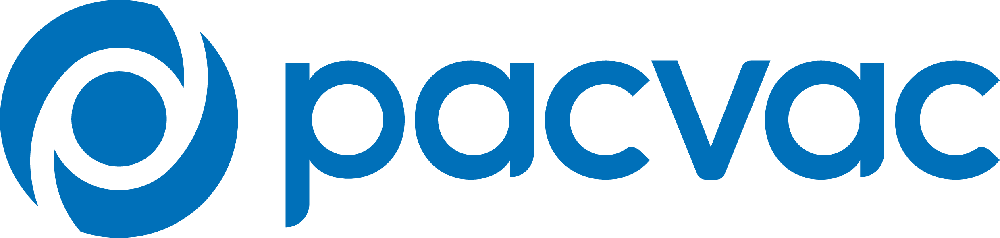
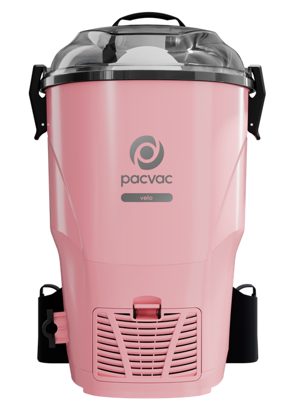
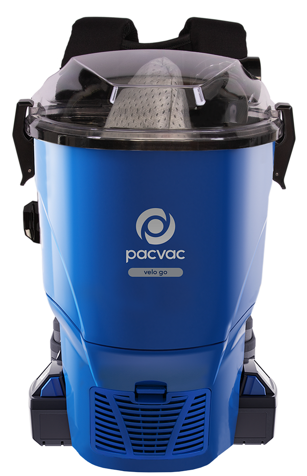
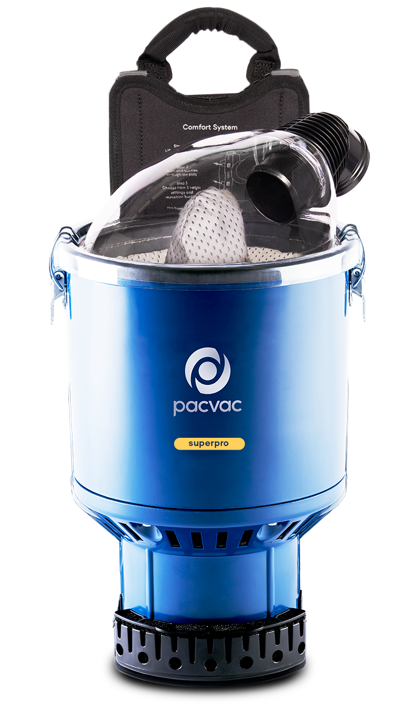
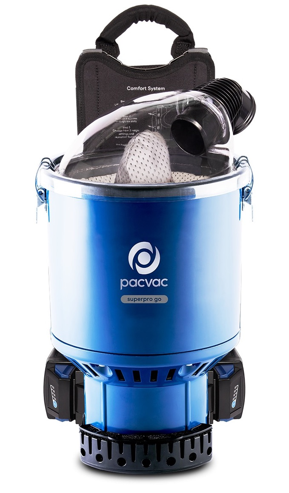

Small and mighty
Lightweight and small enough to get into tight spaces, Velo is a versatile cleaning tool for both professionals and those wanting to
achieve a professional quality clean at home.
The corded Velo is amongst the lightest backpack vacuums on the market, delivering strong suction power driven by the
900W motor in a compact, lightweight machine weighing just 3.9kg.
Velo comes standard with our Ecoharness, featuring thicker padding for a more comfortable fit.
Made from at least 50% rPet (recycled polyethylene terephthalate), Pacvac is proud to offer the Ecoharness made from
recycled plastic water bottles as part of their commitment to a more sustainable product offering.
Velo is equipped with an H13 HEPA Hypercone™ filter, providing four stages of filtration and effectively filtering out
99.95% of 0.3 micron sized dust particles to provide cleaner air for your environment.
This backpack machine is the first within our range to offer a water resistant on-off switch at the base of the machine,
and comes with the All purpose floor tool (FLT001) in the box - an industry favourite!

Same high-performance Velo, now in limited edition pink!
This limited edition model combines the power, comfort, and efficiency of the original Velo with an iconic bold finish. This is Pacvac most
in-demand vacuum, designed to meet demand from both domestic and light commercial customers, Pink Velo is a proven favourite for those who demand exceptional performance with style.
Lightweight and small enough to get into tight spaces, Velo is a versatile cleaning tool for both professionals and those wanting to achieve a professional quality clean at home.
The corded Velo is amongst the lightest backpack vacuums on the market, packing a punch with a 900W motor powering the compact 3.9kg machine.
With an 18m cord, the compact Velo offers a total cleaning surface area of 1158m2.
Velo comes standard with our Ecoharness, featuring thicker padding for a more comfortable fit.
Made from at least 50% rPet (recycled polyethylene terephthalate), Pacvac is proud to offer the Ecoharness made from recycled plastic water bottles as part of their commitment
to a more sustainable product offering.
Velo is equipped with an H13 HEPA Hypercone™ filter, providing four stages of filtration and effectively filtering out 99.95% of 0.3 micron sized dust particles to provide cleaner air for your environment.
This backpack machine is the first within our range to offer a water resistant on-off switch at the base of the machine, and comes with the All purpose floor tool (FLT001) in the box - an industry favourite!
For a deeper carpet clean and thorough pet hair removal, we recommend pairing Velo with our Turbo head floor tool (FLT007) to further agitate dirt and debris on low to medium pile carpet.
Pink Velo is strictly limited edition and only available for a short time. Due to high demand, stock is limited and only available while supplies last. Purchase the Pink Velo now so you don’t miss out on Pacvac’s most requested vacuum.

Compact, cordless and lightweight
Velo go is a compact, lightweight cordless backpack vacuum cleaner fitted with a powerful motor to give users both
complete freedom to clean and the power they need for maximum productivity.
Powerful enough to tackle large commercial cleans, small enough to get into tight spaces, Velo go is a versatile
cleaning tool for both professionals and those wanting to achieve a professional quality clean at home.
Velo go is equipped with a Hypercone 4-stage filtration system to leave air cleaner than it finds it, and an open
disposable dust bag to ensure peak suction levels are maintained as the dust bag fills.
Enjoy a powerful boost mode to give the user an extra surge of power to tackle even the most challenging cleaning tasks
with ease.
Designed with leading-edge, lithium-ion rechargeable battery technology, and engineered with a brushless motor, this
battery backpack vacuum is a durable and enhanced performer with a long motor life.
Enjoy the comfort of the supportive ecoharness and waistband, made by combining of high-quality materials with
sustainable recycled textiles, resulting in an extra thick, padded harness.
Made from at least 50% rPet (recycled polyethylene terephthalate), Pacvac is proud to offer a harness made from recycled
plastic water bottles as part of their commitment to a more sustainable product offering.
With adjustable shoulder and chest straps, we’ve designed this harness to give any user a tailored, comfortable cleaning
experience.

No.1 Choice of commercial cleaners
A backpack vacuum provides the user with freedom and strong suction power to deliver high productivity and a deep clean
for large scale commercial environments.
This vacuum includes a pre-motor cone filter, delivering cleaner air, and a premium motor to provide strong suction
power to tackle your daily vacuuming tasks.
Superpro comes with our Ecoharness which features three levels of height adjustability, comfortable thick padding, a
breathable mesh backing and is made from at least 50% recycled plastic materials.
You’ll enjoy an 18m long cord, allowing you to complete your vacuuming without having to switch power points all the
time, and a cord holder to keep your cord neat and tidy, preventing tripping and tangling hazards.
There’s also an additional power outlet on the side of the machine which can be used to run compatible powered floor
tools and accessories.
*Superpro comes with five disposable paper cone dust bags and two reusable SMS cone dust bags in the box.

A backpack vacuum provides the user with freedom and strong suction power to deliver high productivity and a
deep clean for large scale commercial environments.
Enjoy a powerful boost mode to give the user an extra surge of power to tackle even the most challenging cleaning tasks with ease.
This vacuum includes a pre-motor cone filter, delivering cleaner air, and a premium motor to provide strong suction power to
tackle your daily vacuuming tasks.
Superpro go comes with our Ecoharness which features three levels of height adjustability, comfortable thick padding, a breathable mesh
backing and is made from at least 50% recycled plastic materials.
*Superpro comes with five disposable paper cone dust bags and two reusable SMS cone dust bags in the box.